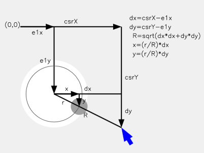

JavaScript Xeyes
What is Xeyes
Xeyes is a small program that shows a pair of eyes whose pupils move to follow the location of the cursor about the screen. It was originally written for the NeXT operating system and was then ported to X-Windows where it became a standard graphics demo program.
Basic principle of Xeyes
The basic idea of xeyes is simple, every time the cursor is moved calculate the direction of the cursor from the centre of each eye, then move the pupils of the eyes in the direction of the cursor, but only as far as the radius of the eye socket. If the cursor is inside the radius of one of the eyes that pupil is moved to the location of the cursor.
Simple xeyes demonstrations often just represent the eyes as two circles and the pupils as two filled circles constrained to lie within them. More complex eye images, as shown in the Salvador Dali image above require three layers of images to achieve the realistic effect.
The bottom layer image provides the color for the 'whites' of the eyes. Over this are positioned the images of the pupils. These are gif or png images with the round pupil solid color and the rest of the image transparent to allow the 'whites' of the eyes to show around the pupils.
The top most layer is the face acting as a mask. This is again a gif so that the eyes can be transparent areas with the pupil and whites showing through. Since the eye holes in the face aren't circular, the edges of the eyes will partly obscure the pupils as they move around as is the case with real eyes.
Xeyes geometry
A schematic of the xeyes geometry is shown in the diagram to the right.
In this diagram the cursor is outside the radius of the eye socket. The cursor location is csrX, csrY measured from the top left of the page. The location of the eye centre is e1x, e1y again measured with respect to the top left of the page. The x and y displacement of the cursor from the centre of the eye is given by:
dx = csrX - e1x dy = csrY - e1y.
The maximum radius of movement of the pupil, r, depends on the size of the eye socket rendered on the screen. It is shown in the diagram as the thin grey circle. When the cursor is outside this circle the center of the pupil is on this circle in the direction of the cursor. The offset of the pupil from the centre of the eye and the offset of the cursor from the centre of the eye, form similar triangles. So the distance to move the pupil in the x and y directions is given by:
x = (r/R)*dx y = (r/R)*dy.
The value of R is readily calculated from Pythagoras's theorem:
R = Math.sqrt(dx*dx+dy*dy);
The function called for any cursor move is shown below:
function moveEyes(e)
{
var csrX, csrY,
x, y,
dx, dy,
R, d;
if (e.pageX)
{
csrX = e.pageX;
csrY = e.pageY;
}
else
{
// IE case
d = (document.documentElement && document.documentElement.scrollLeft != null) ?
document.documentElement : document.body;
csrX = e.clientX + d.scrollLeft;
csrY = e.clientY + d.scrollTop;
}
// eye 1 first
dx = csrX - e1x;
dy = csrY - e1y;
R = Math.sqrt(dx*dx+dy*dy); // distance from eye centre to csr
x = (R < r1)? dx : dx*r1/R;
y = (R < r1)? dy : dy*r1/R;
eye1Obj.style.left = x + e1xLoc + "px";
eye1Obj.style.top = y + e1yLoc + "px";
// now for eye 2
dx = csrX - e2x;
dy = csrY - e2y;
R = Math.sqrt(dx*dx+dy*dy);
x = (R < r2)? dx : dx*r2/R;
y = (R < r2)? dy : dy*r2/R;
eye2Obj.style.left = x + e2xLoc + "px";
eye2Obj.style.top = y + e2yLoc + "px";
}
The cursor coordinates, e.clientX and e.clientY gives the cursor position relative to the top left of the screen, the browser viewport. But the coordinates of the page elements are all referred to the top left of the page. The viewport may have been scrolled so that the top left of the page is not the top left of the screen. The terms document.documentElement.scrollLeft and ...scrollTop correct for any scrolling so that csrX and csrY refer to the offset from the top left of the page.
Implementation details
To get the basic geometry to work in operational code, rather than just tutorial examples, some additional points should be noted.
HTML Code
The set of images required for xeyes (face, leftEye, rightEye and maybe a background image for the sockets) should all be children of a wrapper DIV element. This wrapper must have CSS style position: absolute, or position: relative to serve as a parent. The wrapper DIV should have border:0 and padding:0 to make sure the 'face' image has the same top and left position values as the wrapper. This is necessary as the position calculations are made relative to face top, left but the actual positioning of the eyes is done relative to the wrapper top, left.
Get Element Position
The left and top offset of several elements of this page are required. All elements are positioned using CSS styling. Cursor location is only accessible in units of pixels. To calculate the offset of an elements position from the cursor location, the position of the element with respect to the top left of the page (in units of pixels) is required.
The cross browser method for retrieving an element's top, left position written by Kirupa Chinnathambi is as follows:
function getPosition(element)
{
var xPosition = 0;
var yPosition = 0;
while(element)
{
xPosition += (element.offsetLeft - element.scrollLeft + element.clientLeft);
yPosition += (element.offsetTop - element.scrollTop + element.clientTop);
element = element.offsetParent;
}
return { x: xPosition, y: yPosition };
}